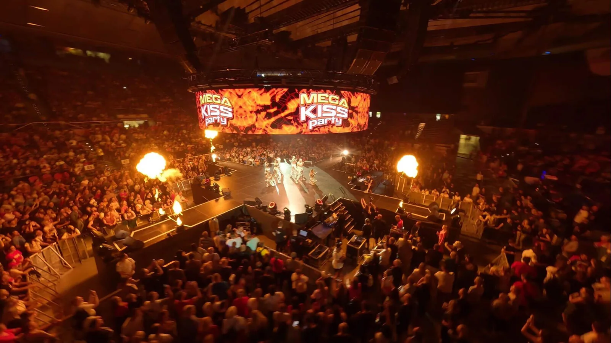

Tvoja 90’s and Millenium Show v Košiciach
TVOJE HITY.
TVOJA NOC.
Vráť sa tam, kde si poznal každý refrén.
Legendy 90. rokov a milénia. Naživo v Košiciach.
STEEL ARÉNA · KOŠICE
HVIEZDY TVOJEJ NOCI
HEADLINERI.
Tri mená. Hity, ktoré nás spájajú.
Zábery z našich show. Túto energiu zažijeme spolu aj v Košiciach.
TÝMTO SA TO NEKONČÍ
LINE-UP PLNÝ LEGIEND.
Spoznaj interpretov, pozri si ich fotky a nalaď sa na najväčšie hity.
POZNÁŠ PRVÉ TÓNY. SPIEVAŠ CELÝ REFRÉN.
HITY NA CELÝ ŽIVOT.
Nalaď sa na našu noc.
18. DECEMBER. ZAPÍŠ SI TO.
VRÁTIME ČAS.
PRIDÁME HLASITOSŤ.
Jeden večer, ktorý ťa vezme späť k prvým diskotékam, obľúbeným kazetám a refrénom, ktoré poznáš naspamäť. Tvoja 90’s & Millenium Show sa vracia do Košíc.
V SAMOM CENTRE DIANIA
PÓDIUM V STREDE.
PÁRTY VŠADE.
360° pódium priamo v strede haly. Interpreti v centre, fanúšikovia okolo a najväčšie hity naprieč celou arénou.
Ilustračný záber z archívu našich show.Sektor A12
Exkluzívna VIP zóna v rámci sektora A12.
VIP Catering
Teplý a studený bufet situovaný vo vyhradenej VIP zóne v rámci sektora A12.
Nápoje
Víno, Prosecco, pivo, nealko.
Vstupenky už od 54,90 €
TENTO REFRÉN CHCEŠ SPIEVAŤ NAŽIVO
TVOJE MIESTO JE V DAVE.
18. 12. 2026 · Steel Aréna Košice · Predaj na SUPERTICKET.sk